정보처리산업기사 (2018-03-04 기출문제)
1과목: 데이터 베이스
1. 다음 트리의 차수는?
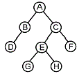
- 2
- 3
- 4
- 8
(정답률: 78%)

2. 다음 영문과 관련되는 SQL 명령은?
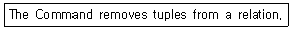
- KILL
- DELETE
- DEL
- ERASE
(정답률: 87%)
3. 널 값(null value)에 대한 설명으로 틀린 것은?
- 정보의 부재를 나타낼 때 사용하는 특수한 데이터 값이다.
- 아직 알려지지 않은 모르는 값이다.
- 공백(space)과는 다른 의미이다.
- 영(zero)과 같은 값이다.
(정답률: 89%)
4. 다음 자료를 버블 정렬을 이용하여 오름차순으로 정렬하고자 할 경우 2회전 후의 결과는?
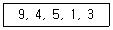
- 4, 1, 3, 5, 9
- 4, 5, 1, 3, 9
- 9, 4, 5, 1, 3
- 4, 5, 9, 1, 3
(정답률: 73%)
5. 다음 트리를 Post-order로 운행할 때 노드 B는 몇 번째로 검사되는가?
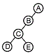
- 2
- 3
- 4
- 5
(정답률: 75%)
6. 해싱 기법에서 동일한 홈 주소로 인하여 충돌이 일어난 레코드들의 집합은?
- Synonym
- Collision
- Bucket
- Overflow
(정답률: 66%)
7. 관계해석에 대한 설명으로 옳지 않은 것은?
- 프레디키트 해석(predicate calculus)으로 질의어를 표현한다.
- 원하는 정보와 그 정보를 어떻게 유도하는가를 기술하는 절차적인 언어이다.
- 튜플 관계해석과 도메인 관계해석이 있다.
- 한정된 튜플 관계해석은 관계 대수의 표현 능력과 동등하다.
(정답률: 77%)
8. SQL의 데이터 정의문(DDL)이 아닌 것은?
- CREATE
- DROP
- ALTER
- INSERT
(정답률: 79%)
9. n개의 원소를 정렬하는 방법 중 평균 수행시간 복잡도와 최악 수행시간 복잡도가 모두 O(nlog2n)인 정렬은?
- 삽입 정렬
- 힙 정렬
- 버블 정렬
- 선택 정렬
(정답률: 75%)
10. 계층형 데이터 모델의 특징이 아닌 것은?
- 개체 타입 간에는 상위와 하위 관계가 존재한다.
- CODASYL DBTG 모델이라고도 한다.
- 루트 개체 타입을 가지고 있다.
- 링크를 사용하여 개체와 개체 사이의 관계성을 표시한다.
(정답률: 53%)
11. 다음의 전위(prefix) 표기식을 중위(infix) 표기식으로 옳게 변환한 것은?
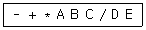
- B * D ＋ A - E / C
- C * D ＋ B - A / E
- E * D ＋ C - B / A
- A * B ＋ C - D / E
(정답률: 83%)
12. 다음은 무엇에 관한 설명인가?
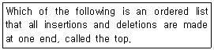
- Array
- Stack
- Queue
- Binary Tree
(정답률: 76%)
13. 릴레이션 A는 4개의 튜플로, 릴레이션 B는 6개의 튜플로 구성되어 있다. 두 릴레이션에 대한 카티션 프로덕트 연산의 결과로서 몇 개의 튜플이 생성되는가?
- 2
- 6
- 10
- 24
(정답률: 78%)
14. 개체-관계(E-R) 모델에서 개체 타입을 표시하는 기호는?
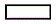
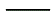
(정답률: 78%)
15. 키 값을 여러 부분으로 분류하여 각 부분을 더하거나 XOR 하여 주소를 얻는 해싱 함수 기법은?
- Divide
- Folding
- Mid-Square
- Digit Analysis
(정답률: 79%)
16. 순서가 A, C, B, D 로 정해진 입력 자료를 스택에 입력하였다가 출력한 결과가 될 수없는 것은? (단, 보기 항에서 좌측 값부터 먼저 출력된 순서이다.)
- D, B, C, A
- D, A, C, B
- A, C, B, D
- C, D, B, A
(정답률: 65%)
17. 시스템 카탈로그에 대한 설명으로 틀린 것은?
- 기본 테이블, 뷰, 인덱스, 패키지, 접근 권한 등의 정보를 저장한다.
- 시스템 테이블로 구성되어 있어 일반 사용자는 내용을 검색할 수 없다.
- 시스템 자신이 필요로 하는 스키마 및 여러 가지 객체에 대한 정보를 포함하고 있는 시스템 데이터베이스이다.
- 자료 사전(Data Dictionary)이라고도 한다.
(정답률: 85%)
18. SQL 문장의 기술이 적당치 않은 것은?
- select... from... where...
- insert... on... values...
- update... set... where...
- delete... from... where...
(정답률: 77%)
19. 테이블, 뷰, 인덱스 제거 시 사용하는 SQL은?
- CREATE 문
- DROP 문
- SELECT 문
- CLOSE 문
(정답률: 88%)
20. 뷰(VIEW)에 대한 설명으로 옳지 않은 것은?
- 데이터의 접근을 제어하게 함으로써 보안을 제공한다.
- 사용자의 데이터 관리를 간단하게 해 준다.
- 뷰가 정의된 기본 테이블이 삭제되면, 뷰도 자동적으로 삭제된다.
- 하나 이상의 기본 테이블로부터 유도되어 만들어지는 물리적이 실제 테이블이다.
(정답률: 78%)
2과목: 전자 계산기 구조
21. 인터럽트 처리에서 I/O 장치들의 우선순위를 지정하는 가장 큰 이유는?
- 인터럽트 발생 빈도를 확인하기 위해서
- CPU가 하나 이상의 인터럽트를 처리하지 못하게 하기 위해서
- 여러 개의 인터럽트 요구들이 동시에 들어올 때 그들 중의 하나를 선택하기 위해서
- 인터럽트 처리 루틴의 주소를 알기 위해서
(정답률: 75%)
22. 인터럽트의 발생 원인이나 종류를 소프트웨어로 판단하는 방법은?
- Polling
- Daisy chain
- Decoder
- Multiplexer
(정답률: 61%)
23. 컴퓨터 주기억장치의 용량이 256MB라면 주소버스의 폭은 최소한 몇 bit 이어야 하는가?
- 24
- 26
- 28
- 30
(정답률: 56%)
24. 다음 Interrupt 중 우선순위가 가장 높은 것은?
- Program Interrupt
- I/O Interrupt
- Paging Interrupt
- Power Failure Interrupt
(정답률: 66%)
25. Operand의 내용을 저장하는 장소에 operand주소를 저장하는 방식으로서 두 번의 참조를 필요로 하는 주소 방식은?
- 직접 주소방식
- 간접 주소방식
- 인덱스 주소방식
- 레지스터 주소방식
(정답률: 67%)
26. 소프트웨어의 의한 인터럽트(interrupt) 우선순위 체제의 특징으로 볼 수 없는 것은?
- 우선순위 등급이 높은 장치가 인터럽트 요청을 할 때 등급이 낮은 장치로 부터는 요청을 할 수 없게 된다.
- 우선순위는 프로그램 상에서 결정하므로 융통성이 있다.
- 우선순위의 설정을 위한 하드웨어가 별도로 필요 없으므로 경제적이다.
- 인터럽트 반응 속도가 느리다.
(정답률: 45%)
27. 정보의 물리적 표현방법으로 2바이트를 사용할 때 표현범위는? (단, K는 kilo이다.)
- 0 ~ FF
- 0 ~ 1K
- 0 ~ 16K
- 0 ~ 64K
(정답률: 49%)
28. 일정한 시간 간격으로 발생한 펄스에 따른 계산기의 각 부분의 동작을 규칙적으로 진행시키는 제어 방식은?
- 직류 방식
- 비동기식 제어 방식
- 비주기식 제어 방식
- 동기식 제어 방식
(정답률: 72%)
29. 레지스터의 내용을 메모리에 전달하는 기능을 무엇이라 하는가?
- Fetch
- Store
- Load
- Transfer
(정답률: 47%)
30. 각 비트(bit)를 전하(charge)의 형태로 저장하며, 주기적으로 재충전이 필요한 기억장치는?
- Static RAM
- Dynamic RAM
- CMOS RAM
- TTL RAM
(정답률: 59%)
31. 산술연산과 논리연산 동작을 수행한 후 결과를 축적하는 레지스터는?
- 누산기
- 인덱스 레지스터
- 플래그 레지스터
- RAM
(정답률: 77%)
32. 주기억 장치의 영역구분을 크게 둘로 나눌 때 가장 옳은 것은?
- 시스템 프로그램 영역, 사용자 프로그램 영역
- 시스템 프로그램 영역, 운영체제 영역
- 관리자 프로그램 영역, 운영체제 영역
- 관리자 프로그램 영역, 사용자 프로그램 영역
(정답률: 56%)
33. 내부 인터럽트와 가장 관련이 없는 것은?
- 오버플로우
- 트랩
- 불법적 명령
- 타이밍 장치
(정답률: 49%)
34. 십진수 6을 4bit excess-3 코드로 변환한 후Gray 코드로 표현한 것은?
- 0110
- 1101
- 1100
- 1001
(정답률: 52%)
35. 컴퓨터에서 정수를 표기할 때 크기를 제한받는 가장 큰 이유는?
- 레지스터의 개수
- 기억용량
- 워드의 비트수
- 기억장치의 종류의 차이
(정답률: 68%)
36. 중앙처리장치에서 데이터를 요구하는 명령을 내린 순간부터 데이터를 주고받는 것이 끝나는 순간까지의 시간을 무엇이라 하는가?
- access time
- loading time
- seek time
- search time
(정답률: 69%)
37. 논리식 Y = AB＋A(B＋C)＋B(B＋C)를 가장 간소화 시킨 것은?
- AB＋C
- ABC
- B＋AC
- A＋BC
(정답률: 42%)
38. 메모리 용량이 총 4096워드이고, 1워드가 8비트라 할 때 PC(program counter)와 MBR(memory buffer register)의 비트수를 올바르게 나타낸 것은?
- PC=8비트, MBR=12비트
- PC=12비트, MBR=8비트
- PC=8비트, MBR=8비트
- PC=12비트, MBR=12비트
(정답률: 67%)
39. 다음 중 CISC(Complex Instruction Set Computer)형 프로세서의 특징이 아닌 것은?
- 명령어의 길이가 일정하다.
- 많은 수의 명령어를 갖는다.
- 다양한 주소 모드를 지원한다.
- 레지스터와 메모리의 다양한 명령어를 제공한다.
(정답률: 67%)
40. 하나의 전가산기를 구성하는 필요한 반가산기는 최소 몇 개 인가?
- 5
- 4
- 3
- 2
(정답률: 72%)
3과목: 시스템분석설계
41. 컴퓨터에 의한 계산 처리에 앞서 오류 데이터 찾기 위하여 입력되는 데이터 항목의 논리적 모순 여부를 체크하는 방법은?
- Numeric Check
- Limit Check
- Logical Check
- Matching Check
(정답률: 65%)
42. 표준 처리 패턴 중 동일한 파일형식을 가지고 있는 두개 이상의 파일을 하나의 파일로 통합처리 하는 패턴을 무엇이라고 하는가?
- 대조(Match)패턴
- 병합(Merge)패턴
- 갱신(Update)패턴
- 생성(Generate)패턴
(정답률: 81%)
43. 프로세스의 표준 처리 패턴 중 마스터 파일 내의 데이터를 트랜잭션 파일로 추가, 변경, 삭제하여 항상 최근의 정보를 갖는 마스터 파일을 유지하는 것은?
- Conversion
- Sort
- Update
- Merge
(정답률: 78%)
44. 코드화 대상 항목의 길이, 넓이, 부피, 무게 등을 나타내는 문자, 숫자 혹은 기호를 그대로 코드로 사용하는 코드는?
- Group Classification Code
- Decimal Code
- Significant Digit Code
- Combined Code
(정답률: 68%)
45. 다음과 같은 코드 부여 방법의 종류는?
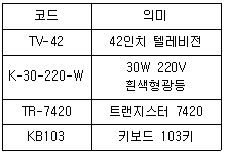
- Group Classification Code
- Block Code
- Letter Type Code
- Mnemonic Code
(정답률: 64%)
46. 입력 방식의 종류 중 현장 정보를 기록한 원시 전표를 전산 부서에서 일정한 주기로 수집하여, 일괄적으로 입력 매체를 작성하는 방식은?
- 분산 입력 방식
- 직접 입력 방식
- 집중 입력 방식
- 턴어라운드(반환) 입력 방식
(정답률: 53%)
47. 입력 데이터의 오류발생 원인 중 좌우자리를 바꾸어서 발생하는 오류로 가장 옳은 것은?
- 오자오류
- 전위오류
- 추가오류
- 임의오류
(정답률: 81%)
48. 객체지향(Object-Oriented)의 개념 설명 중 가장 옳지 않은 것은?
- 클래스(Class) : 데이터 값을 저장하는 필드와 이 필드에서 연산하는 메소드로 정의
- 속성(Attribute) : 객체들이 갖고 있는 데이터의 값으로 파일처리에서 객체는 레코드, 속성은 필드와 유사한 개념
- 객체(Object) : 데이터 구조와 이 구조 하에서 이루어진 연산들이 모여서 하나의 독립된 기능을 수행하는 것
- 메소드(Method) : 객체들 사이에서 정보를 교환하기 위한 수단
(정답률: 55%)
49. 대화형 입출력 방식 중 화면에 여러 개의 항목을 진열하고 그 중의 하나를 선택 도구로 지정하여 직접 실행하는 방식으로 직접 조작 방식이라고도 하는 것은?
- 프롬프트 방식
- 커맨드 방식
- 항목 채우기 방식
- 아이콘 방식
(정답률: 60%)
50. 출력 보고서 설계 시 고려 사항으로 가장 거리가 먼 것은?
- 이용자
- 이용목적
- 보고서의 양
- 보고서의 보관순서
(정답률: 53%)
51. 시스템의 특성 중 시스템이 정의된 기능을 오류가 없이 정확히 발휘하기 위해 정해진 규정이나 한계, 또는 궤도로부터 이탈되는 사태나 현상을 미리 인식하여 그것을 올바르게 수정해 가는 것을 의미하는 것은?
- 목적성
- 자동성
- 제어성
- 종합성
(정답률: 76%)
52. 다음 설명에 해당하는 시스템은?
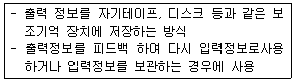
- 음성 출력 시스템
- 파일 출력 시스템
- 인쇄 출력 시스템
- COM 시스템
(정답률: 51%)
53. 다음 파일형식 중 파일편성의 설계 종류에 해당하는 것은?
- 색인 순차 편성 파일(Indexed sequence file)
- 원시 데이터 파일(Source data file)
- 마스터 파일(Master file)
- 트랜잭션 파일(Transaction file)
(정답률: 59%)
54. 입력 정보의 매체화를 그 데이터가 발생한 장소에서 하고 그 입력 매체를 주기적으로 수집하여 컴퓨터에 입력시키는 방식을 사용하는 입력 형식으로 가장 옳은 것은?
- 분산 매체화 시스템
- 턴어라운드 시스템
- 직접 입력 시스템
- 피드백 시스템
(정답률: 38%)
55. 다음 중 시스템으로서 “좋은 시스템”과 “좋지 않은 시스템”을 판정하는 기준으로 가장 거리가 먼 것은?
- 시스템의 가격
- 시스템의 효율
- 시스템의 신뢰성
- 시스템의 유연성
(정답률: 74%)
56. 시스템 개발 시 문서화의 효과에 대한 설명으로 가장 거리가 먼 것은?
- 시스템 개발 단계에서의 요식적 행위이다.
- 효율적인 소프트웨어 개발관리가 용이하다.
- 시스템 개발 중 추가 변경에 따른 혼란을 방지한다.
- 시스템 개발 후에 유지보수가 용이하다.
(정답률: 78%)
57. 프로토타입 모델의 순차적 과정 순서를 가장 옳게 나열한 것은?
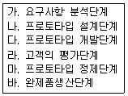
- 가 → 나 → 다 → 라 → 마 → 바
- 가 → 다 → 나 → 마 → 라 → 바
- 나 → 가 → 다 → 라 → 마 → 바
- 가 → 다 → 나 → 라 → 마 → 바
(정답률: 68%)
58. 순차편성에 적합하고 평균 처리 시간(access time)이 가장 긴 매체는?
- 자기디스크
- 자기테이프
- 자기드럼
- 자기코어
(정답률: 67%)
59. 시스템 오류 검사 기법 중 수신한 데이터를 송신 측으로 되돌려 보내 원래의 데이터와 비교하여 오류 여부를 검사하는 방법은?
- Balance Check
- Range Check
- Limit Check
- Echo Check
(정답률: 71%)
60. 시스템 개발 방법을 축차적 방법과 규범적 방법으로 분류할 때 규범적 방법에 대한 설명으로 가장 옳은 것은?
- 기존 시스템이 존재하지 않을 경우, 새로운 목적에 따라 시스템을 개발하는 방법으로 과거 유사한 시스템의 개발 경험을 최대한 활용한다.
- 개발기간이 짧고 시스템의 도입이 쉽다.
- 안정된 기존의 시스템이 존재하는 경우 적용 설계가 가능하다.
- 현행 시스템의 문제를 개선하는 개발 방법이다.
(정답률: 51%)
4과목: 운영체제
61. 다음 설명과 같은 현상이 의미하는 것은?
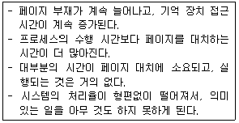
- Segmentation
- Locality
- Thrashing
- Monitor
(정답률: 71%)
62. 가변분할 다중 프로그래밍 시스템에서 하나의 작업이 끝났을 때, 그 저장장치가 다른 비어있는 저장 장소와 인접되어 있는지를 점검한다. 이 때 인접한 공백들을 하나의 공백으로 합치는 과정을 무엇이라고 하는가?
- 교체(Swapping)
- 단편화(Segmentation)
- 집약(Compaction)
- 통합(Coalescing)
(정답률: 58%)
63. 13K의 작업을 다음 그림의 30K 공백의 작업공간에 할당했을 경우 사용된 기억장치 배치전략 기법은?
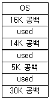
- Last fit
- First fit
- Best fit
- Worst fit
(정답률: 69%)
64. CPU 스케줄링 알고리즘을 선택할 때 고려해야 할 사항으로 가장 옳은 것은?
- CPU 이용률과 처리율을 최대화한다.
- CPU 이용률은 최소화하고 응답시간은 최대화한다.
- 처리율은 최소화하고 반환시간은 최대화한다.
- 대기시간, 응답시간, 반환시간 모두를 최대화한다.
(정답률: 66%)
65. 다음 중 공개키 암호화 방법과 관계없는 것은?
- 대칭 알고리즘을 이용한다.
- 디지털 서명에도 이용된다.
- 암호화 키는 공개되어 있다.
- 복호키 또는 개인키만이 전문을 복호할 수 있다.
(정답률: 44%)
66. PCB 에 저장되는 정보가 아닌 것은?
- 할당되지 않은 주변 기기들의 상태 정보
- 프로세스의 현재 상태
- 프로세스가 위치한 메모리에 대한 포인터
- 프로세스의 우선순위
(정답률: 69%)
67. 버퍼링과 스풀링의 비교 설명으로 가장 옳지 않은 것은?
- 버퍼링은 일반적으로 하드웨어적 구현이지만 스풀링은 소프트웨어적 구현이다.
- 버퍼링은 일반적으로 단일 작업단일사용자이지만 스풀링은 다중작업 다중사용자이다.
- 버퍼링에서 일반적으로 버퍼의 위치는 주기억 장치이지만 스풀링에서 스풀의 위치는 디스크이다.
- 일반적으로 버퍼링은 스택 또는 큐 방식의 입출력을 수행하지만 스풀링은 스택방식으로 입출력을 수행한다.
(정답률: 43%)
68. UNIX에서 현재 디렉토리 내의 파일 목록을 확인하는 명령은?
- find
- ls
- cat
- finger
(정답률: 68%)
69. 기억장치 배치 전략 중 프로그램이나 데이터가 들어갈 수 있는 크기의 빈 영역 중에서 단편화를 가장 많이 남기는 분할영역에 배치시키는 기법은?
- FIRST FIT
- WORST FIT
- LARGE FIT
- BEST FIT
(정답률: 70%)
70. SJF(Shortest Job First) 스케줄링에서 작업도착시간과 CPU 사용시간은 다음 표와 같다. 모든 작업들의 평균 대기시간은 얼마인가?
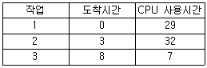
- 6
- 9
- 12
- 18
(정답률: 53%)
71. 분산 운영체제에서 각 노드들이 point-to-point 형태로 중앙 컴퓨터에 연결되고 중앙 컴퓨터를 경유하여 통신하는 위상(Topology) 구조는?
- 성형(Star) 구조
- 링(Ring) 구조
- 계층(Hierarchy) 구조
- 완전 연결(Fully Connection) 구조
(정답률: 73%)
72. RR(ROUND ROBIN) 스케줄링 기법의 특징이 아닌 것은?
- 할당된 자원과 처리기의 소유권은 수행중인 프로세스의 제어권한이다.
- FIFO스케줄링 기법을 선점기법 (PREEMPTIVE)으로 구현한 것이다.
- 대화식 시분할 시스템에 적합한 방식이다.
- 빈번한 스케줄러의 실행이 요구된다.
(정답률: 34%)
73. 디스크에서 헤드가 70트랙을 처리하고 60트랙으로 이동해 왔다. 디스크 스케줄링 기법으로 SCAN 방식을 사용할 때 다음 디스크 대기큐에서 가장 먼저 처리되는 트랙은?
- 20
- 50
- 95
- 100
(정답률: 70%)
74. 분산 시스템의 장점이 아닌 것은?
- 보안이 향상된다.
- 자원 공유가 가능하다.
- 신뢰성이 보장된다.
- 연산 처리 속도가 향상된다.
(정답률: 71%)
75. 운영체제 구성요소의 핵심으로 인터럽트 처리기, 디스패처, 프로세스 동기화 등을 지원하는 것은?
- I/O 인터페이스
- Shell
- Kernel
- NetBIOS
(정답률: 61%)
76. 다음 CPU 스케줄링 방식 중 비선점(nonpreemptive) 방식에 해당하지 않는 것은?
- SRT 스케줄링
- HRN 스케줄링
- FIFO 스케줄링
- SJF 스케줄링
(정답률: 47%)
77. 스레드에 대한 설명으로 틀린 것은?
- 프로세스 내부에 포함되는 스레드는 공통적으로 접근 가능한 기억장치를 통해 효율적으로 통신한다.
- 스레드란 프로세스보다 더 작은 단위를 말하며, 다중 프로그래밍을 지원하는 시스템 하에서 CPU에게 보내져 실행되는 또 다른 단위를 의미한다.
- 프로세스가 여러 개의 스레드들로 구성되어 있을 때, 하나의 프로세스를 구성하고 있는 여러 스레드들은 모두 공통적인 제어흐름을 갖는다.
- 상태의 절감은 하나의 연관된 스레드 집단이 기억장치나 파일과 같은 자원을 공유함으로써 이루어진다.
(정답률: 56%)
78. HRN 기법에서 우선순위를 구하는 식은?
- (대기시간＋서비스를 받을 시간) / 서비스를 받을 시간
- (서비스를 받을 시간＋대기 시간) / 대기 시간
- (서비스를 받을 시간 – 대기 시간) / 대기 시간
- (대기 시간 – 서비스를 받을 시간) / 서비스를 받을 시간
(정답률: 69%)
79. Master/Slave(주/종) 처리기에 대한 설명으로 가장 옳지 않은 것은?
- 종 프로세서는 입, 출력 발생 시 주프로세서에게 서비스를 요청한다.
- 주 프로세서는 운영체제를 수행한다.
- 주 프로세서가 고장나면 전체 시스템이 다운된다.
- 종 프로세서는 입, 출력과 연산을 담당한다.
(정답률: 67%)
80. E. J. Dijkstra가 제안한 방법으로 반드시 상호배제의 원리가 지켜져야 하는 공유 영역에 대해 각각의 프로세스들이 접근하기 위하여 사용되는 두 개의 연산 P와 V를 통해서 프로세스 사이의 동기를 유지하고 상호 배제의 원리를 보장하는 것은?
- synchronization
- context switching
- monitor
- semaphore
(정답률: 63%)
5과목: 정보통신개론
81. 광대역종합정보통신망인 ATM 셀(CELL)의 구조로 옳은 것은?
- Header : 5 옥텟, Payload : 53 옥텟
- Header : 5 옥텟. Payload : 48 옥텟
- Header : 2 옥텟, Payload : 64 옥텟
- Header : 6 옥텟, Payload : 52 옥텟
(정답률: 64%)
82. ARQ 방식 중 데이터 프레임을 연속적으로 전송해 나가다가 NAK를 수신하게 되면, 오류가 발생한 프레임 이후에 전송된 모든 데이터 프레임을 재전송하는 것은?
- GO-back-N ARQ
- Selective-Repeat ARQ
- Window-Control ARQ
- Adaptive ARQ
(정답률: 73%)
83. 데이터그램(datagram) 패킷교환방식에 대한설명으로 틀린 것은?
- 수신은 송신된 순서대로 패킷이 도착한다.
- 속도 및 코드 변환이 가능하다.
- 각 패킷은 오버헤드 비트가 필요하다.
- 대역폭 설정에 융통성이 있다.
(정답률: 43%)
84. 광섬유 케이블의 기본 동작 원리는 무엇에 의해서 이루어지는가?
- 산란
- 흡수
- 전반사
- 분산
(정답률: 75%)
85. 광섬유의 구조 손실에 해당하지 않는 것은?
- 다중 모드 손실
- 불균등 손실
- 코어 손실
- 마이크로밴딩 손실
(정답률: 38%)
86. 샤논(Shnnon)의 정리에 따라 백색 가우스 잡음이 발생되는 통신선로의 용량(C)이 옳게 표시된 것은? (단, W : 대역폭, S/N : 신호대잡음비)
- C=Wlog2(1＋S/N)
- C=2Wlog10(10＋S/N)
- C=Wlog2(S/N)
- C=3Wlog10(1＋S/N)
(정답률: 51%)
87. 다음 중 데이터 통신에서의 변조 방식이 아닌 것은?
- ASK
- PSK
- FSK
- ESK
(정답률: 71%)
88. 통화 중에 이동전화가 한 셀에서 다른 셀로 이동할 때 자동으로 다른 셀의 통화 채널로 전환 해 줌으로써 통화가 지속되게 하는 기능은?
- 핸드오프
- 핸드쉐이크
- 쉘의 분할
- 페이딩
(정답률: 65%)
89. 데이터 교환방식 중 축적 교환방식에 해당하지 않는 것은?
- 메시지 교환방식
- 회선 교환방식
- 데이터그램 패킷교환방식
- 가상회선 패킷교환방식
(정답률: 47%)
90. 통신망 구성 형태 중 하나의 노드에 여러 개의 노드가 연결되어 있는 형태로, 각 노드가 계층적으로 구성되어 있는 망의 형태는?
- 트리(Tree)형
- 링(Ring)형
- 스타(Star)형
- 버스(Bus)형
(정답률: 70%)
91. 변조속도가 1600[baud]이고 트리비트(tribit)를 사용한다면 전송속도(bps)는?
- 1600
- 3200
- 4800
- 6400
(정답률: 72%)
92. 다음 중 16-QAM에서 16은 무엇의 개수를 나타내는가?
- 위상
- 진폭
- 위상과 진폭의 조합
- 주파수
(정답률: 63%)
93. 16진 QAM 의 전송 대역폭 효율은 몇 [bps/Hz]인가?
- 2
- 4
- 8
- 16
(정답률: 64%)
94. OSI 7계층 참조모델 중 응용 프로세스 간의 정보교환, 전자사서함, 파일전송 등을 취급하는 계층은?
- 물리 계층
- 응용 계층
- 데이터링크 계층
- 전송 계층
(정답률: 40%)
95. 데이터 전송을 수행하는 경우, 전달 방향이 교대로 바뀌어 전송되는 교번식 통신 방법으로 무전기에 사용되는 것은?
- 반이중 통신
- 전이중 통신
- 단방향 통신
- 실시간 통신
(정답률: 68%)
96. 대역폭이 100[kHz]이고 신호대잡음비(S/N)가 15일 때, 채널용량[Kbps]은?
- 200
- 400
- 600
- 800
(정답률: 50%)
97. 검출 후 재전송(ARQ) 방법에 해당하지 않는 것은?
- Window-Control ARQ
- Stop-and Wait ARQ
- Go-back-N ARQ
- Selective-Repeat ARQ
(정답률: 66%)
98. 통신 프로토콜(Protocol)의 기본 요소가 아닌 것은?
- 구문
- 의미
- 순서
- 포맷
(정답률: 70%)
99. HDLC의 프레임 구조에 포함되지 않는 것은?
- 스타트 필드(Start Field)
- 플래그 필드(Flag Field)
- 주소 필드(Address Field)
- 제어 필드(Control Field)
(정답률: 69%)
100. LAN에서 사용되는 매체 액세스 제어 기법과 관련 없는 것은?
- TOKEN-BUS
- XSMA
- CSMA/CD
- TOKEN-RING
(정답률: 65%)